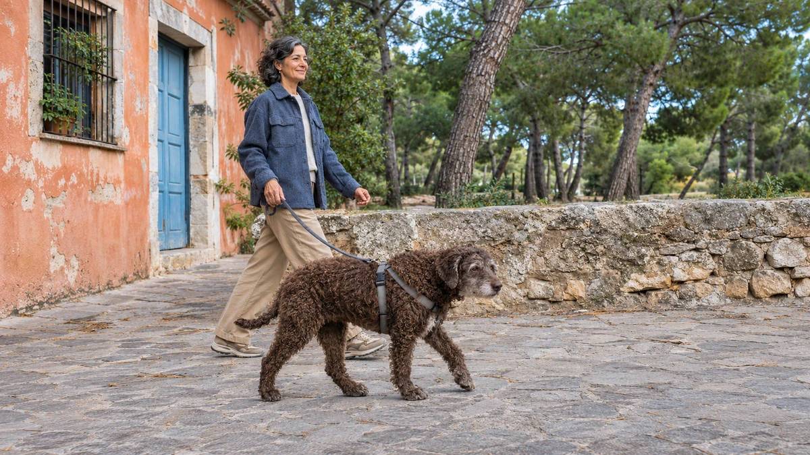
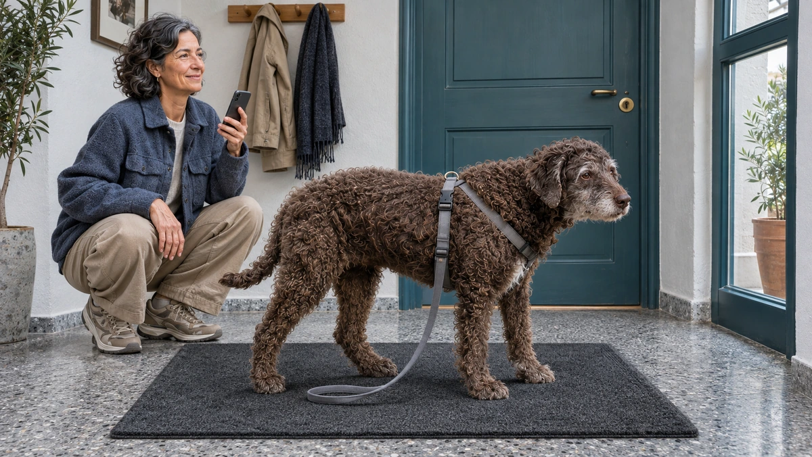
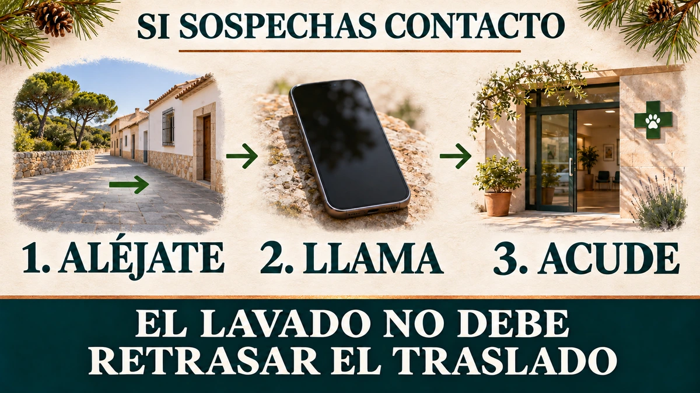
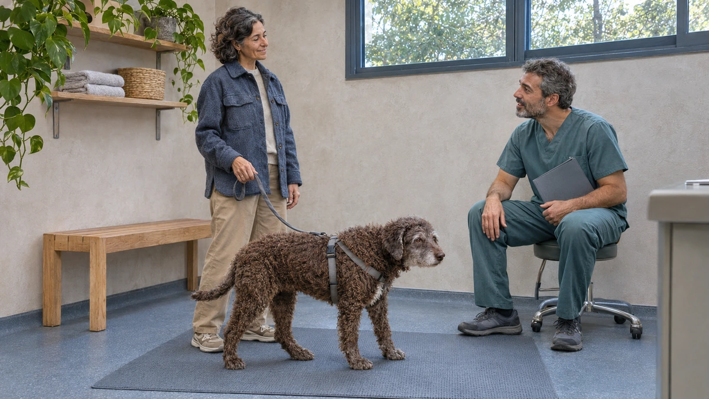
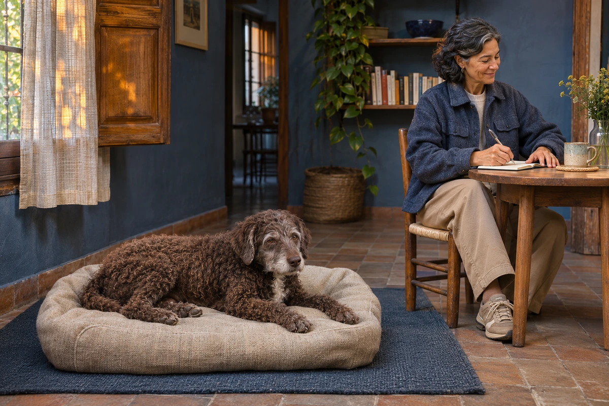
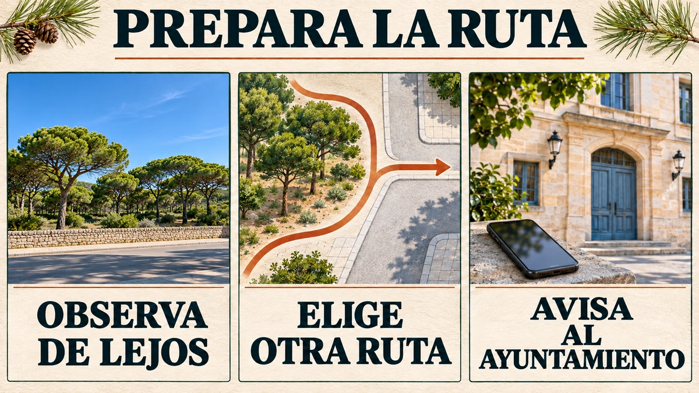
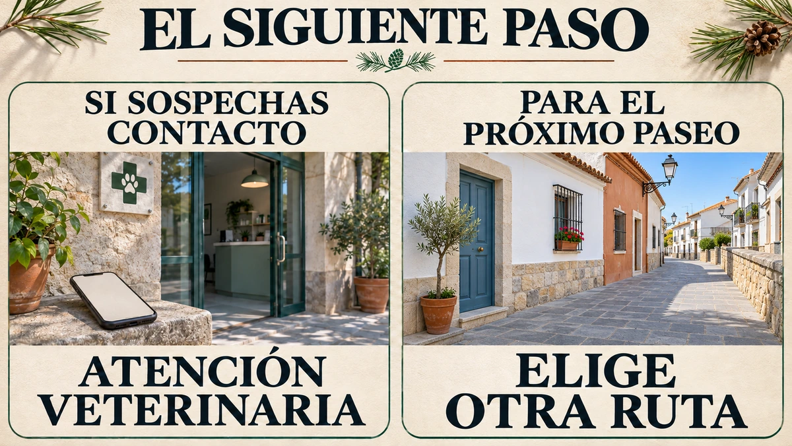

PortadaUn recorrido alternativo permite seguir el paseo fuera de una zona afectada.
Señales de contacto: cuándo salir hacia urgenciasPuedes comunicar lo que observas sin abrirle la boca ni tocarle los ojos.
Qué hacer antes de llegar: apartarse, llamar y lavar solo si es seguroEl orden es apartarse, contactar con la clínica y acudir; el lavado queda subordinado al traslado.
Qué información necesita el veterinario y cómo se valora el dañoLos antecedentes y lo ocurrido durante el paseo ayudan a organizar la valoración veterinaria.
Después del alta: qué registrar en un perro mayorUn registro sencillo ayuda a compartir las indicaciones recibidas y las observaciones del día.
Pasear en España: evitar el contacto sin depender de un mes fijoObservar el entorno desde lejos y preparar otro recorrido evita acercarse a una zona afectada.
ConclusiónLa atención ante una exposición y la preparación del próximo paseo son decisiones distintas.